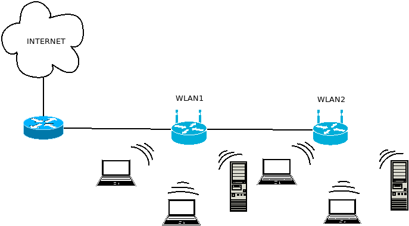

4. Redes inalámbricas¶
Las redes inalámbricas permiten transmitir la información sin necesidad de cables. Muy groseramente podemos distinguir dos grandes tipos:
- Redes de acceso WAN
que son aquellas en que la conexión inalámbrica es la que posibilita el acceso a internet. Podemos distinguir:
WiMAX, en que la conexión a Internet llega al cliente a través de ondas de radio transmitidas gracias a antenas repetidoras cercanas, de modo que la cobertura está limitada a un radio máximo de 70 Km, frecuentemente menos. Fuera de esa cobertura, no existirá servicio. WiMAX permite la conexión a internet sin que una infraestructura de cable llegue al hogar. Para más información Xataka tiene un artículo que explica en qué consiste WiMAX.
Redes de telefonía móvil, que a diferencia de la anterior no exigen la ubicación del cliente dentro de un área geográfica limitada. Existen distintas tecnologías que han ido mejorando sucesivamente las prestaciones:
GSM, el estándar de telefonía móvil de segunda generación (2G), que permitió por primera vez la conexión a internet. La anterior generación (1G) basado en el estándar AMPS era simplemente un sistema analógico para voz.
GPRS, que mejoraba los servicios ofrecidos por GSM. A veces, se le ha referido como 2.5G.
UTMS, que permitía ya velocidades de hasta 2Mb/s. Constituyo la tercera generación (3G).
LTE, que no cumplía con los requisitos que se le exigían a la cuarta generación.
4G, con velocidades de hasta 1Gb/s con el dispositivo estático o 100Mb/s con el dispositivo en movimiento (en un tren o un coche, por ejemplo).
5G, pensada para dar soporte al Internet de la cosas.
Ver también
Para más información sobre este tipo de redes, puede echar un vistazo a LTE, el salto del 3G al 4G. O casi… o al artículo en inglés Cellular Wireless Technologies.
Internet por satélite, en que la conexión a la Internet se realiza a través de un satélite. Se utiliza en aquellas zonas rurales alejadas en que no hay otro modo de conexión.Para más detalle, puede leerse este artículo de Xataka sobre internet satelital.
- Redes locales
Se suelen referir con el nombre de WLAN (redes de área local inalámbricas).
- Redes bluetooth
Son redes ad-hoc de muy corto alcance pensadas para constituirse sin necesidad de cableado ni dispositivos de red. Dada su pequeño radio de cobertura (no más de 100 metros), se suele referir estas redes más que como WLAN, como WLAN, o sea, redes de área personal. Puede profundizar en ellas leyendo este artículo de wikiwand.
- Redes wifi
que son aquellas en que se constituye una red local o un segmento de red local sin la presencia de cables, aunque los cables pueden enlazar con internet, o entre sí los distintos segmentos o las distintas redes de la intranet.

Enfocaremos la unidad sobre estas últimas redes.
Contenidos